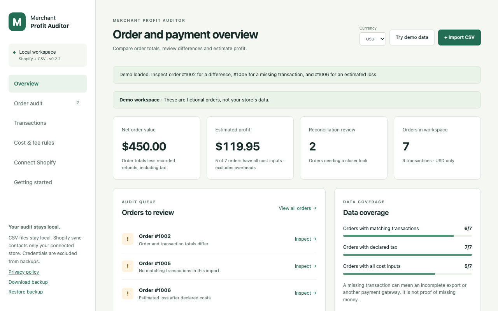
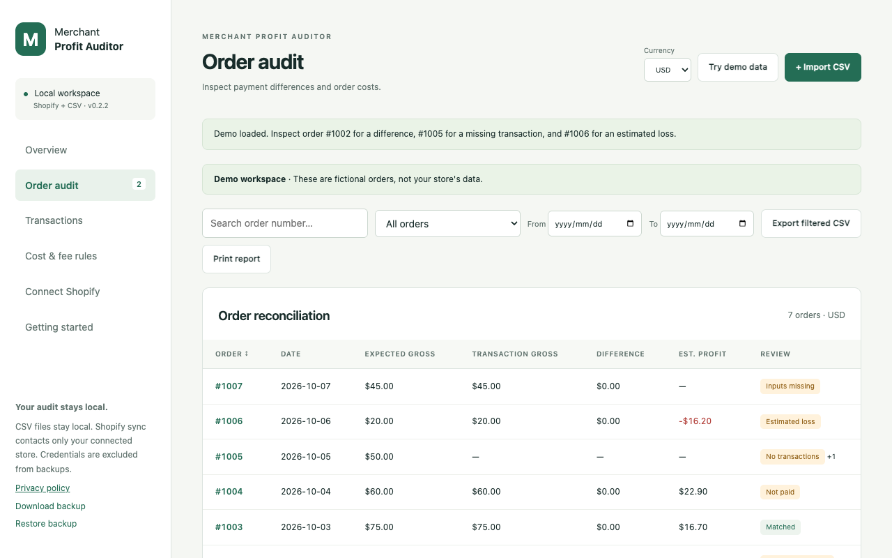
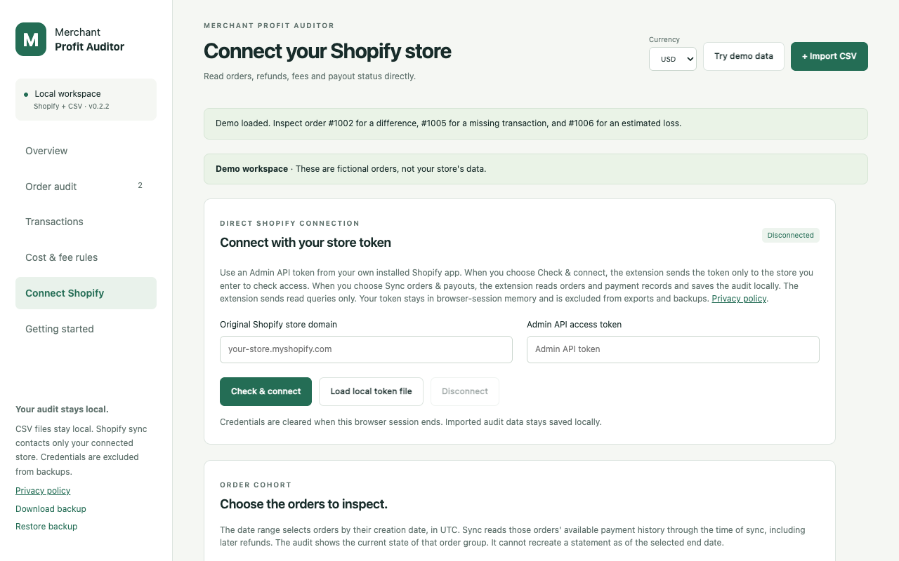

Reconcile orders and payments
Match orders with charges and refunds, including split payments. Review missing transactions, unlinked records, fee differences and payout groups.
Chrome extension · Version 0.2.2
Compare order totals with payment transactions and payout records. Review mismatches, refunds and pending payouts, then estimate order profit using the costs you supply.
Match orders with charges and refunds, including split payments. Review missing transactions, unlinked records, fee differences and payout groups.
Import orders, balance transactions and SKU costs with column previews. Optional direct sync uses your approved store and an Admin API token from your own installed Shopify app.
Enter SKU costs, shipping and advertising assumptions. Override costs and retained tax for individual orders. Missing inputs stay visible and currencies remain separate.
Search and filter the audit by dates, discrepancies, pending payouts, missing costs or estimated losses. Export filtered CSVs, print reports or create a local backup.



Yes. CSV auditing runs locally without a store connection or developer server. You can try fictional demo data and sample CSVs first.
Your own installed Shopify app and Admin API token with read_orders, read_shopify_payments_accounts and read_shopify_payments_payouts access. Shopify Payments must be active. This release has no one-click public Shopify installation. Older orders require additional approved read_all_orders access.
No. A discrepancy is a record that needs review. It does not establish overcharging, recovered money or accounting accuracy.
No. Estimates depend on complete records and the costs entered. They do not include every overhead or income tax. Different currencies remain separate; exchange rates are not invented.
No. Sync selects orders by creation date in UTC and reads their available payment history through sync time, including later refunds. The audit reflects the current state of those orders.
No. It is an independent Chrome extension. It does not access your bank account, request store write scopes or certify accounting accuracy.
Audit records and cost rules stay in local browser storage. Optional Shopify requests go only to the store you approve. Tokens stay in browser-session storage and are excluded from exports and backups. There is no developer server, advertising or analytics.
Read the full privacy policyScreenshots show version 0.2.2 with fictional demo data. The Shopify setup view is disconnected and does not imply a tested live-store sync.
For support, describe the steps and your Chrome version. Do not post private records, tokens or recordings in public issues.